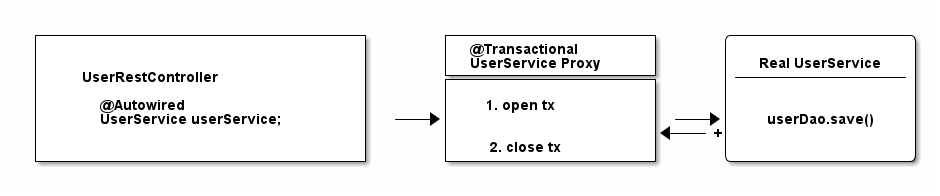

Spring Transaction Management
- A transaction is a sequence of operations performed as a single logical unit of work. Either all the operations within the transaction complete successfully, or none of them do (all changes are rolled back).
- In the context of databases, a transaction ensures that a group of SQL statements are executed as a unit, maintaining the integrity of the database.
- Transactions help maintain data consistency, especially in systems with concurrent operations.
- They prevent issues like partial updates, ensuring that either all operations within a transaction succeed, or the system reverts to its original state.
- For example, in banking, transferring money between accounts involves debiting one account and crediting another; transactions ensure both operations occur, or neither does.
ACID Properties
- Atomicity: All or nothing principle.
- Consistency: Ensuring the database moves from one valid state to another.
- Isolation: Transactions are isolated from each other until completed.
- Durability: Once a transaction is committed, changes are permanent.
These properties ensure that transactions are processed in a way that maintains the integrity of the database, even in case of system failures, concurrency, or errors.
Plain JDBC Transaction Management
- A connection to the database to start transactions. Most enterprise applications have a data source configured and get connections from that.
- setAutoCommit(true) makes sure that every single SQL statement automatically gets wrapped in its own transaction and setAutoCommit(false) is the opposite: the developer will need to start calling commit and friends. The autoCommit flag is valid for the whole time the connection is open, which means the method needs to called once, not repeatedly.
- Commit transaction.
- Or, rollback changes, if there was an exception.
Spring's Transaction Management
Programmatic Transaction Management
Uses either TransactionTemplate, or PlatformTransactionManager directly.
- Instead of opening or closing database connections manually, this uses Transaction Callbacks.
- Spring converts these
SQLExceptionsto runtime exceptions. TransactionTemplateuses aTransactionManagerinternally, which uses the configured data source.- Better integration into the Spring ecosystem.
Declarative Transaction Management using XML
- Were used when XML configuration was norm.
- Old documentation
- But it leads to a lot of complicated, verbose XML, with the pointcut and advisor configurations.
Declarative Transaction Management using @Transactional
To be able to use this, the following is needed:
- Spring Configuration is annotated with the @EnableTransactionManagement (Spring Boot does this automatically).
- Specify a transaction manager in the Spring Configuration.
@Transactional annotation, will execute inside a database transaction.
Inside @Transactional
- Spring can not actually re-write the service method.
- When
@Transactionalis used on a bean, Spring initiates a transactional proxy of the service when instantiating the actual service. - This is done using proxy-through-subclassing with the help of the Cglib library.

Any other bean does not know of the actual service bean, but the proxy bean.
Problems
Programmatic vs. Declarative Transactions
- Programmatic transactions provide fine-grained control over transaction boundaries. But increases boilerplate code, is more error-prone, and is harder to maintain.
- Declarative transactions helps to separate business logic from transaction management, and can apply same transactional behavior multiple layers and methods without repeating same logic. Although, this has proxy limitations, i.e. it can not manage transactions on private methods and self-invoked methods within the same class.
Transaction Types
- Physical Transactions: Actual JDBC transactions.
- Logical Transactions: The (potentially nested)
@Transactionalannotated (Spring) methods.
Transaction Manager
- The proxy manages the transaction, but no the transaction states (open, commit, close).
- This job handled by the Transaction Manager.
- All transaction managers have methods like
doBeginordoCommit.
@Transactional annotation on a bean, it creates a dynamic proxy of that bean.
2. The proxy has access to a transaction manager and will ask it to open and close transactions / connections.
3. The transaction manager itself will manage the JDBC connection.
The PlatformTransactionManager is a core interface in Spring that provides the underlying mechanism for transaction management. It acts as the abstraction for managing transactions, whether working with relational databases, NoSQL databases, message queues, or any other transactional resources. The PlatformTransactionManager enables Spring to decouple the transaction management logic from the business logic, ensuring that transactions are handled consistently across different resources. Its key roles are:
- Transaction Abstraction:
- Managing Transaction Lifecycle
- Transaction Propagation Handling
- Support for Multiple Transaction Managers
- Integration with Spring’s Declarative and Programmatic Transactions
- Handling Different Transaction Types (Distributed Transactions)
Propagation Behaviors
Transaction propagation behaviors define how the transactional context should behave when a method annotated with @Transactional is called within an existing transaction or when no transaction is present. They really have nothing to do with the database or JDBC, but more with how you structure your program with Spring and how/when/where Spring expects transactions to be there.
Available propagation levels/modes:
- REQUIRED: If there's an existing transaction, the method joins it. If there isn't, a new transaction is created. This is default and is the most commonly used propagation behavior, as it ensures that multiple methods share the same transaction when called within the same flow.
- SUPPORTS: If an existing transaction is present, the method participates in it. If no transaction exists, the method runs without one. This is useful for operations that can work with or without a transaction, such as read-only operations that don’t require strict transaction boundaries.
- MANDATORY: Requires an existing transaction. If no transaction is found, an exception is thrown. This is useful when certain methods must always be called within an existing transaction and cannot operate independently of one.
- REQUIRES_NEW: Always creates a new transaction, suspending the existing one if there is one. The new transaction will be committed or rolled back independently of the previous transaction.
- NOT_SUPPORTED: The method is executed without a transaction. If an existing transaction exists, it is suspended for the duration of the method's execution. Useful for non-transactional operations that should not participate in any transaction, such as reporting or data aggregation where transaction overhead is not needed.
- NEVER: Ensures that the method is never executed within a transaction. If an existing transaction is found, an exception is thrown. Suitable for operations that must not run in a transaction under any circumstances. For example, certain batch processing or file operations that should not be part of a transaction.
- NESTED: It creates a nested transaction if a current transaction exists, rather than suspending the parent transaction. The nested transaction can be rolled back independently of the parent transaction. However, if the parent transaction rolls back, the nested transaction also rolls back. Useful for complex operations where you want to rollback part of the work (nested transaction) without affecting the outer transaction.
| Propagation Type | New Transaction? | Uses Existing Transaction? | Suspends Existing Transaction? | Throws Exception Without Transaction? |
|---|---|---|---|---|
REQUIRED |
No (if exists) | Yes | No | No |
REQUIRES_NEW |
Yes | No | Yes | No |
SUPPORTS |
No | Yes | No | No |
NOT_SUPPORTED |
No | No | Yes | No |
NEVER |
No | No | No | Yes |
MANDATORY |
No | Yes | No | Yes |
NESTED |
Yes (nested) | Yes | No | No |
Transaction Isolation
Database transaction has the following problems, or anomalies: 1. dirty read: A transaction reads data written by a concurrent uncommitted transaction. 2. nonrepeatable read: A transaction re-reads data it has previously read and finds that data has been modified by another transaction (that committed since the initial read). 3. phantom read: A transaction re-executes a query returning a set of rows that satisfy a search condition and finds that the set of rows satisfying the condition has changed due to another recently-committed transaction. 4. serialization anomaly: The result of successfully committing a group of transactions is inconsistent with all possible orderings of running those transactions one at a time.
Transaction Isolation refers to how database transactions are isolated from one another in a multi-user database environment. Isolation is a key component of the ACID properties of transactions. It determines how and when changes made by one transaction are visible to other concurrent transactions, thus preventing data corruption and ensuring consistency.
- READ_UNCOMMITTED, is the lowest level of isolation. Transactions are allowed to see changes made by other uncommitted transactions. Rarely used, as it risks reading uncommitted and potentially incorrect data.
- READ_COMMITTED, the most commonly used isolation level, providing a balance between consistency and performance. Transactions can only read committed data. If another transaction modifies a row but hasn’t committed yet, the first transaction won’t see the changes.
- REPEATABLE_READ ensures that if a transaction reads the same data more than once, it will see the same value each time, even if another transaction modifies the data.
- SERIALIZABLE, the most strict and highest level of isolation. Any concurrent execution of a set of Serializable transactions is guaranteed to produce the same effect as running them one at a time in some order. But it can significantly reduce performance due to increased locking and reduced concurrency.
| Isolation Level | Dirty Read | Nonrepeatable Read | Phantom Read | Serialization Anomaly | java.sql.Connection constant |
|---|---|---|---|---|---|
| Read uncommitted | Allowed | Possible | Possible | Possible | 1 |
| Read committed | Not possible | Possible | Possible | Possible | 2 |
| Repeatable read | Not possible | Not possible | Allowed | Possible | 4 |
| Serializable | Not possible | Not possible | Not possible | Not possible | 8 |
Both Spring and Hibernate do not set any default transaction isolation level. Instead, the default isolation level is the one defined by the underlying database.
| Database | Default Isolation Level |
|---|---|
| MS SQL Server | READ COMMITTED |
| Oracle | READ COMMITTED |
| MySQL | REPEATABLE READ |
Rollback and Commit
Commit
- A commit operation in a transaction means that all the operations within that transaction are completed successfully, and the changes made during the transaction are permanently saved to the database.
- When a method annotated with
@Transactionalcompletes without throwing any exceptions, Spring’s transaction manager will automatically commit the transaction. This includes all database operations (likeINSERT,UPDATE, orDELETE) executed during the transaction. - Spring detects the end of the method and calls the
commit()method on the underlyingPlatformTransactionManager(e.g.,HibernateTransactionManager,DataSourceTransactionManager). - All the changes (e.g., database updates, inserts, or deletes) made within the boundaries of the transaction are saved to the database. After the commit, these changes are permanent and visible to other transactions or sessions.
Rollback
- A rollback operation reverses all the changes made during a transaction, leaving the database in its original state as if the transaction had never occurred. It is used to maintain data integrity in the case of failures or exceptions.
- By default, Spring rolls back a transaction if a runtime exception (unchecked exception) or error is thrown within a transactional method.
- The
@Transactionalannotation makes use of- the attributes
rollbackFororrollbackForClassNameto rollback the transactions, - and the attributes
noRollbackForornoRollbackForClassNameto avoid rollback on listed exceptions.
- the attributes
The Flow
- Begin Transaction: The transaction starts when a method annotated with
@Transactionalis called, and a connection to the database is opened. - Perform Operations: All the database operations within the transactional boundaries are executed.
- End of Method: When the method completes, Spring checks:
- If no exceptions: Spring will commit the transaction, meaning all changes will be made permanent in the database.
- If an exception occurs: Spring will roll back the transaction, meaning all changes made during the transaction will be undone, and the database will remain as it was before the transaction started.
Spring and Hibernate Transaction Management
The following is how hibernate manages transactions.
The problem is, neither Spring's @Transactional or Hibernate know about each other. To fix this integration problem, instead of using a DataSourcePlatformTransactionManager in Spring configuration, use a HibernateTransactionManager (if using plain Hibernate) or JpaTransactionManager (if using Hibernate through JPA).
Configure this transaction to Spring context.
With this, hibernate and Spring @Transactional can be used together.